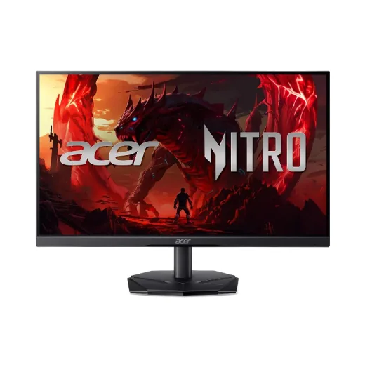
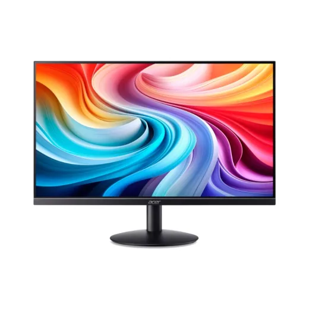
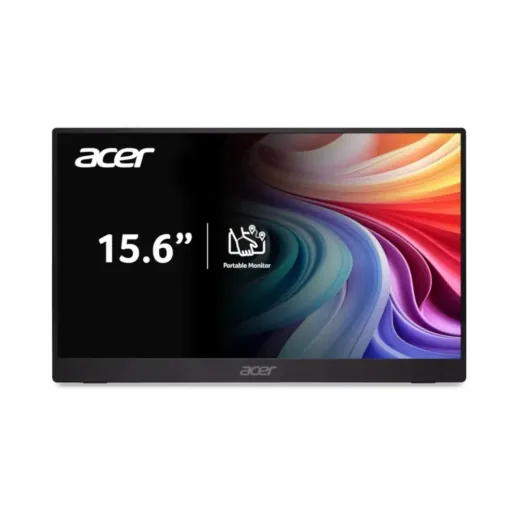
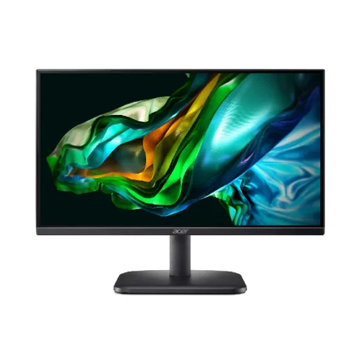
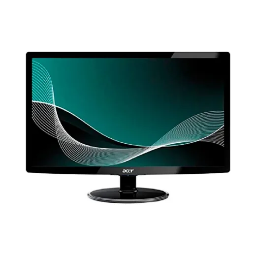
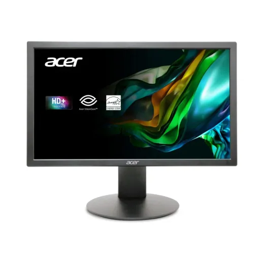
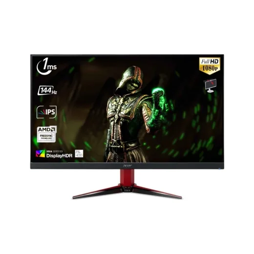
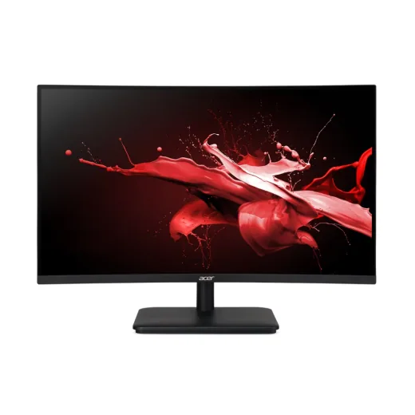
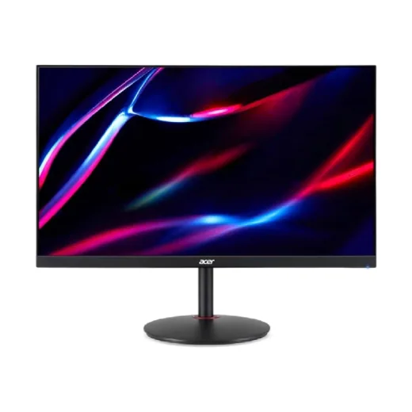

Acer · Modelo UMKX1AA302
Monitor Acer 24 Gaming 1Ms 180Hz Hdmi Display Port KG251Q
L 3,190
En Acosa
Precio en cada tienda
| Tienda | Precio | Antes | Disponibilidad | |
|---|---|---|---|---|
| Acosa | L 3,190 | Disponible | Ver en tienda › |
Precios referenciales tomados de cada tienda el 14 de noviembre de 2026. El precio válido es el que muestra la tienda al comprar.
Otros monitores Acer

Monitor Acer 24 1Ms 120Hz Hdmi VGA Sb240y Ultra-thinL 3,070.01En Acosa
Monitor portátil Acer IPS 15.6" FHD Negro PM161QJBMIUUL 2,995En 2 tiendas · más barato en La Curacao
Monitor Acer 21.5 Fhd Va 1920 X 1080 Hdmi Vga Ek221q NegroL 2,735.1En Acosa
Monitor Acer 21.5 Hd 1920 X 1080 Vga S212kl NegL 2,670En Acosa
Monitor LED 20" Acer K202Q BI · FHD 75Hz 5ms · HDMI/VGA UM.IE0AA.004L 2,495.01En Sycom
Monitor Acer 27 Gaming 2Hdmi Display Port 1920X1080 Vg270L 4,870En Acosa
Monitor Acer 27 Curvo 1Ms 280Hz 2Hdmi Display Port ED270L 6,670En Acosa
Monitor Acer 27 Gaming 1Ms 180Hz Hdmi Display Port XV271UL 6,733.4En Acosa